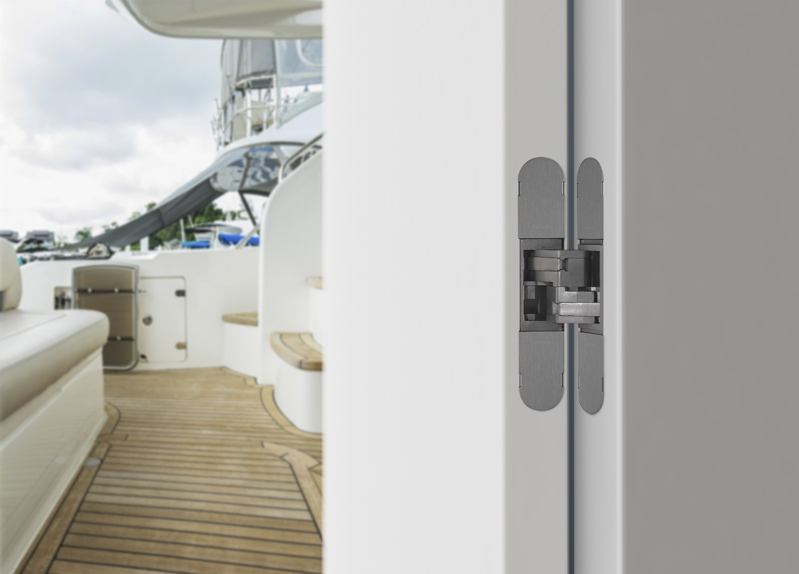

Полностью из нержавеющей стали AISI 304L — для сложных погодных условий и яхт.
| Размер | 134 × 24 × 21 мм |
| Нагрузка | 55 кг на 2 петли · 70 кг на 3 |
| Мин. толщина двери | 30 мм |
| Двери | дерево, алюминий, сталь |
| Огнестойкость | EI30 |
| Отделки | нержавеющая сталь |